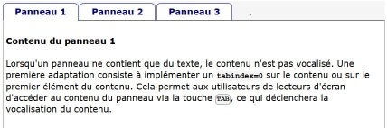

Description

Ce composant permet d'afficher des contenus sous la forme d'un système d'onglets : les contenus de chaque onglet sont masqués jusqu'à ce que l'utilisateur clique sur l'onglet, un seul onglet peut être affiché à la fois.
Restitution
- Chaque onglet doit posséder un nom accessible (ressource en anglais).
- L'onglet actif et sa position dans la liste des onglets doit être vocalisé.
- le contenu de chaque panneau est vocalisé automatiquement ou sur action de l'utilisateur lorsqu'il interagit avec le contenu.
Interactions de base au clavier
Les interactions au clavier sont :
- Les flèches haut ou droite permettent de passer à l'onglet suivant.
- Les flèches bas ou gauche permettent de passer à l'onglet précédent.
- La tabulation permet d'atteindre chaque élément interactif de l'onglet affiché.
- Les touches Espace et Entrée permettent d'afficher l'onglet sélectionné lorsque son contenu n'est pas afiché automatiquement.
Motif de conception : Tabpanel (WAI-ARIA Authoring Practices 1.1)
Exemple de Tabpanel
Cet exemple propose 3 panneaux (ou onglets) contenant soit du texte, soit du texte et des liens.